Mokshapuri Kashi
Varanasi (Kashi)
Kashi Vishwanath Corridor, Dashashwamedh Ganga Aarti, Kaal Bhairav & Sarnath.
Plan Kashi Visit॥ Har Har Mahadev · Official Kashi Darshan Yatra · Shri Kashi Vishwanath Dham ॥
Experience the sacred bliss of official Kashi Darshan. VIP Sugam Darshan at Shri Kashi Vishwanath Dham, grand evening Ganga Aarti at Dashashwamedh Ghat, Subah-e-Banaras sunrise boat ride, Kaal Bhairav, Annapurna Mandir & Sarnath — with private AC cabs and local pandit guides.
Kashi Darshan & Sacred Circuit
From Shri Kashi Vishwanath Corridor & sacred Ganga Ghats to Ram Janmabhoomi & Triveni Sangam — every Kashi Darshan yatra is planned with deep reverence, comfort, and VIP temple darshan.
Kashi Vishwanath Corridor, Dashashwamedh Ganga Aarti, Kaal Bhairav & Sarnath.
Plan Kashi VisitShri Ram Janmabhoomi Mandir, Hanuman Garhi, Saryu Aarti & Kanak Bhawan.
Plan VisitHoly Triveni Sangam snan by private boat, Bade Hanuman ji & Anand Bhawan.
Plan VisitShri Krishna Janmabhoomi, Banke Bihari VIP entry & Prem Mandir light show.
Plan VisitState & City Special Tours
Book all-inclusive Kashi Darshan packages with direct flight/train ticket coordination, handpicked hotels near Vishwanath Corridor, AC cab, and VIP entry passes.
🌐 Special Seva for Overseas Devotees & Foreign Travelers
Visiting Kashi from USA, UK, Canada, Australia, Singapore, Malaysia or Dubai? We offer seamless end-to-end arrangements for NRIs, PIOs, and international tourists — from airport transfers to VIP Kashi Vishwanath Darshan and private Ganga Aarti boat cruises.
Direct VNS Airport transfers in premium luxury AC Innova/SUVs with courteous drivers.
Government approved, English-speaking local scholar guides for ghat walks & Sarnath.
Pre-booked Kashi Vishwanath Sugam Darshan & Mangala Aarti passes for elderly family members.
Reserved private bajra/motorboat for Dashashwamedh Ganga Aarti & Subah-e-Banaras.

What we carry for you in Kashi
We don't just book tickets and rooms. From the moment you arrive at Varanasi airport or station to your last Ganga Aarti, your Kashi yatra runs on a quiet, reliable rhythm — guided, escorted, and looked after with care.
All Services & PackagesSugam Darshan VIP passes, knowledgeable local pandits, and seamless entry through the Corridor.
Hand-picked hotels near Kashi Vishwanath Corridor and Dashashwamedh Ghat with clean AC rooms.
Sunrise & evening Aarti boat rides, VNS Airport pickups, and private AC cabs across Kashi & nearby circuits.
Popular tour packages
All-inclusive, fully-guided Kashi Darshan tour packages tailored to your schedule. Choose from 1-day local Kashi Darshan to multi-day Kashi, Ayodhya & Prayagraj pilgrimages with VIP temple passes.

Indian Air Force mega aerial show on 22, 24 & 25 Oct at Namo Ghat. Surya Kiran, Rafale aerobatics schedule, Namo Ghat timings & 100% free entry guide.
Read Air Show Guide
Kashi Vishwanath Corridor · Dashashwamedh Aarti · Sarnath · Boat Ride
⭐ Most PopularKashi Vishwanath Sugam Darshan · Ganga Aarti · Kaal Bhairav · Sarnath

Kashi Vishwanath · Ganga Aarti · Ram Mandir · Hanuman Garhi
VIP Ram Mandir entry · Hanuman Garhi · Saryu Aarti
 Most loved
Most lovedKashi Vishwanath · Triveni Sangam · Ram Mandir

Four sacred cities at an unhurried pace
Travel Guides & Yatra Tips
Essential tips, timing slots, and booking guides to plan your perfect spiritual yatra.
Sunrise rituals at Assi Ghat (05:00 AM), Vedic Hawan, morning Ganga Aarti & private sunrise boat tour fares.
Read Morning Guide
Experience 10 Lakh+ diyas across 84 ghats. Complete 3-day package including 3-star hotel stay, reserved boat viewing & Kashi Vishwanath VIP pass.
Explore Festival Package
Complete guide to Mangla, Bhog, Sandhya, Shringar & Shayan Aarti. Official tickets (₹300-₹500), Garbhagriha entry gates & booking tips.
Read Aarti Guide
Verified 2026 guide to 3-star, 4-star, and 5-star hotels in Godowlia, Cantt & Ghats. Tariffs, elevator access for senior citizens & VIP booking.
Read Hotel Guide
Indian Air Force mega aerial show on 22, 24 & 25 Oct at Namo Ghat. Surya Kiran, Rafale aerobatics schedule, Namo Ghat timings & 100% free entry guide.
Read Air Show Guide
Official guide on Dev Deepawali private bajra rates, Ganga Aarti illumination timings & direct boat booking.
Read Boat Guide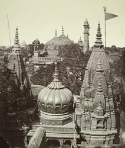
Complete guide for Kashi Vishwanath Mangla Aarti online booking, ticket price (₹500-₹1000), 03:00 AM entry gates & dress code.
Read Aarti Guide
Combined festive package: 25 lakh diyas in Ayodhya, VIP Ram Mandir darshan, and private boat ride for 84 ghats Dev Deepawali.
Read Festival GuideLearn how to touch the Golden Jyotirlinga, morning & afternoon Sparsh slots, dhoti/saree dress code, and Rudrabhishekam.
Read Sparsh Guide
Confused about Ram Mandir VIP entry? Read our detailed guide on booking Sugam Darshan/VIP passes and priority queue tips.
Read VIP Pass Guide
Planning a luxury cruise ride in Varanasi? Read our guide on Kashi Ganga Cruise online booking, Alaknanda Cruise tickets, and timings.
Read Cruise GuideVoices of devotees
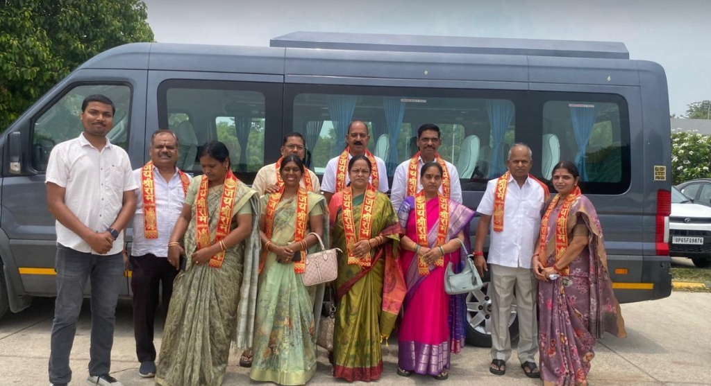
Delhi NCR
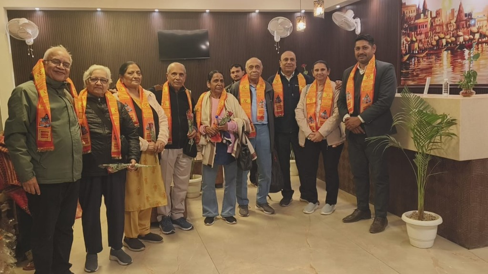
Mumbai, MH
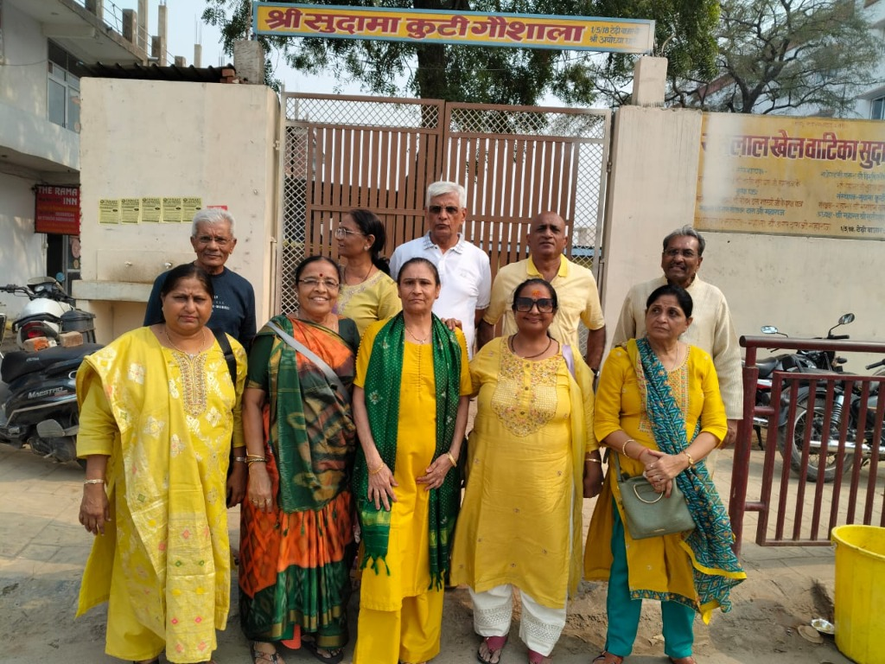
Bhopal, MP
Ahmedabad, GJ
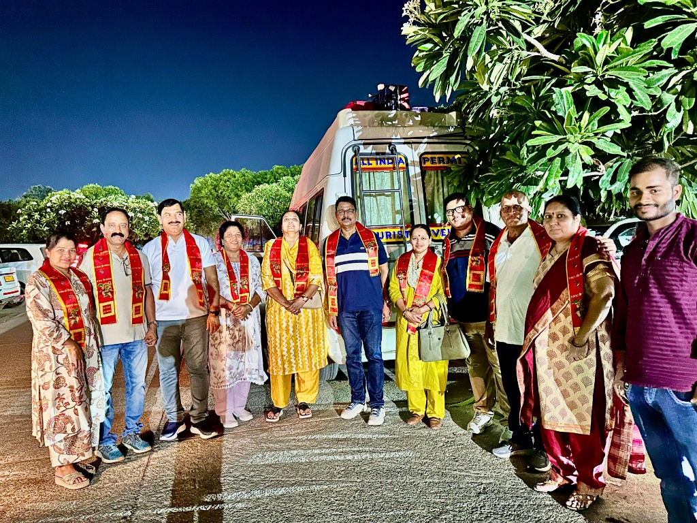
Bengaluru, KA
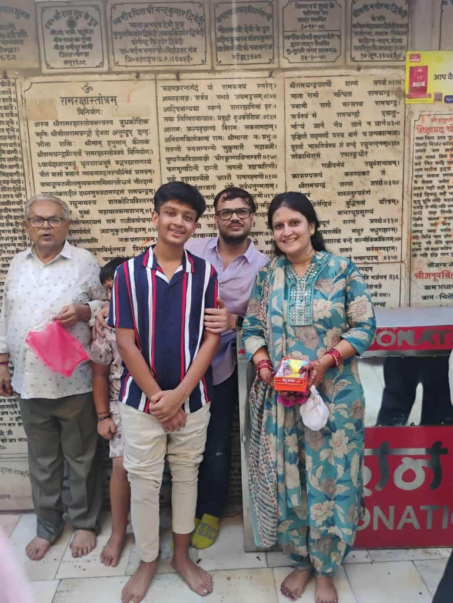
Jaipur, RJ
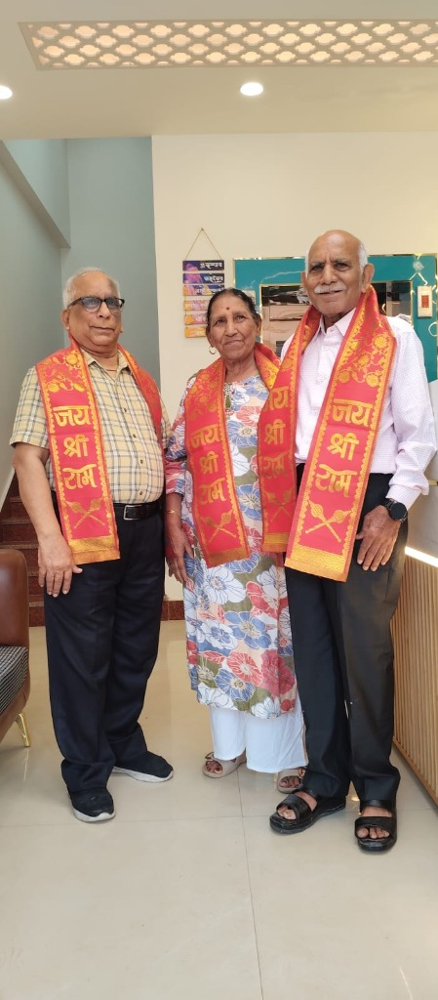
Kolkata, WB
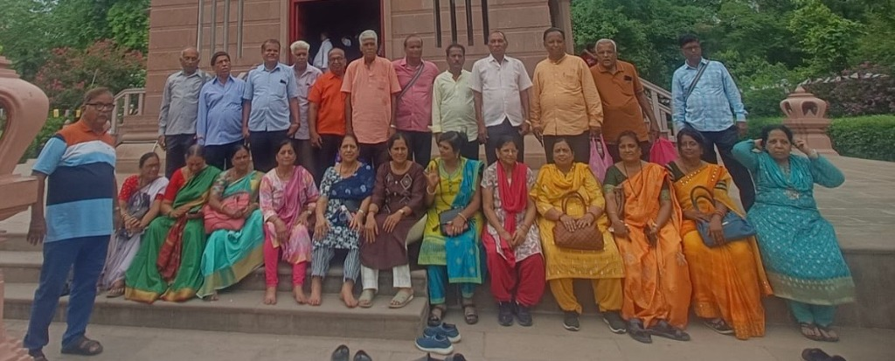
Patna, Bihar
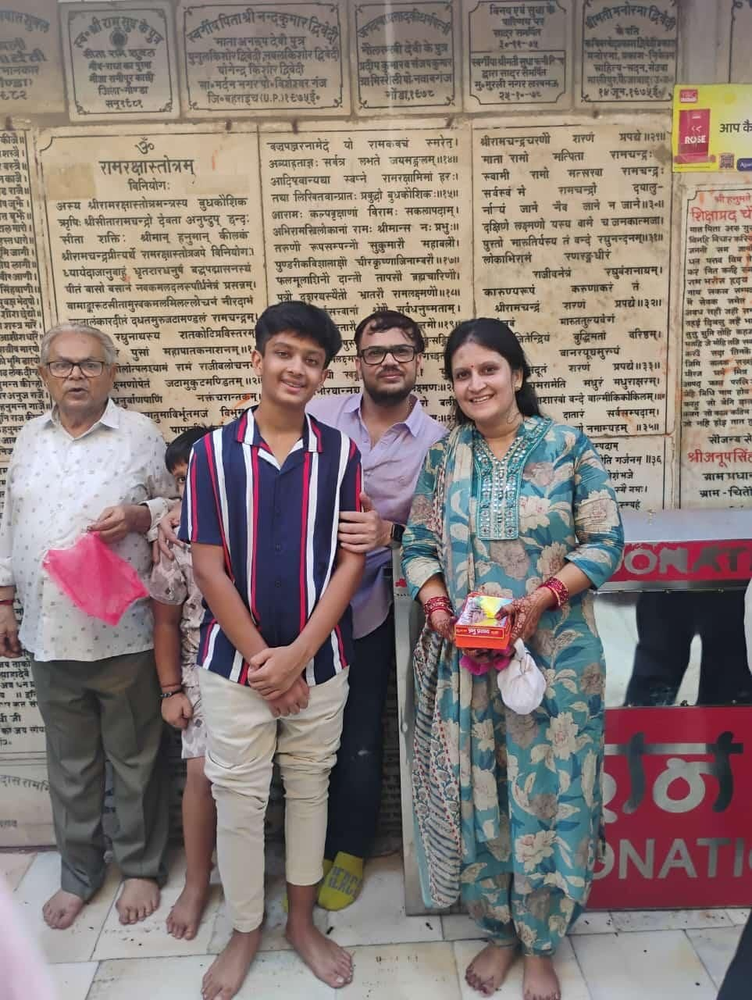
“Our recent pilgrimage was truly unforgettable. From the moment our journey began, everything was perfectly arranged with great care and professionalism. The taxi service was punctual and extremely comfortable. They organized our visit to Shri Kashi Vishwanath Dham beautifully with Sugam Darshan Pass. Sightseeing in Varanasi, Ayodhya, Prayagraj, and Chitrakoot was exceptionally well-planned.”
Indian Air Force mega aerial show on 22, 24 & 25 Oct at Namo Ghat. Surya Kiran, Rafale aerobatics schedule, Namo Ghat timings & 100% free entry guide.
Read Air Show Guide“It was well managed and planned trip. The car provided was good and also Kashi Vishwanath Darshan was hassle free with the sugam Darshan pass. The guide we got was really good guy.”
“We stayed for 4 Days & 3 Nights. Kashi Dharshan team managed our transportation, sightseeing, and Mandir Darshans perfectly. They even arranged Mangala Aarti Darshan on the morning of our departure. Highly dependable!”
“Three generations of our family at the Sangam together — they arranged the boat, the pandit, and even held my father’s hand on the steps. A morning we will never forget.”
Happy pilgrims
Real families, real darshan. A few of the smiles we've been blessed to be part of.
Kashi Vishwanath · VaranasiGroup yatra · Kashi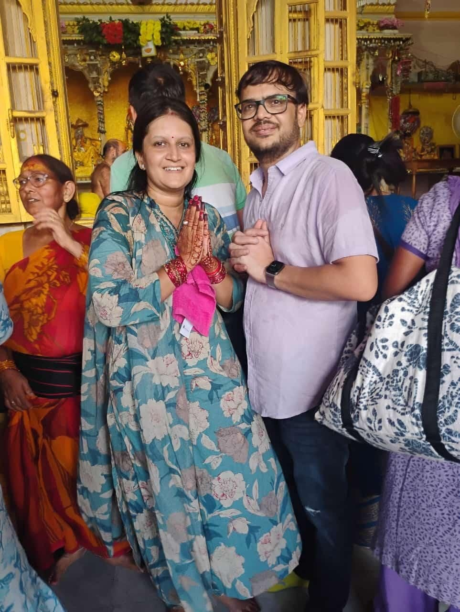
Banke Bihari · Vrindavan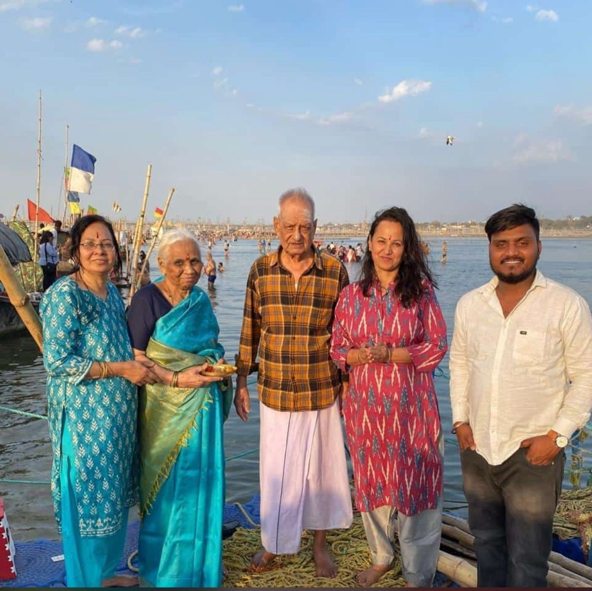
Triveni Sangam · Prayagraj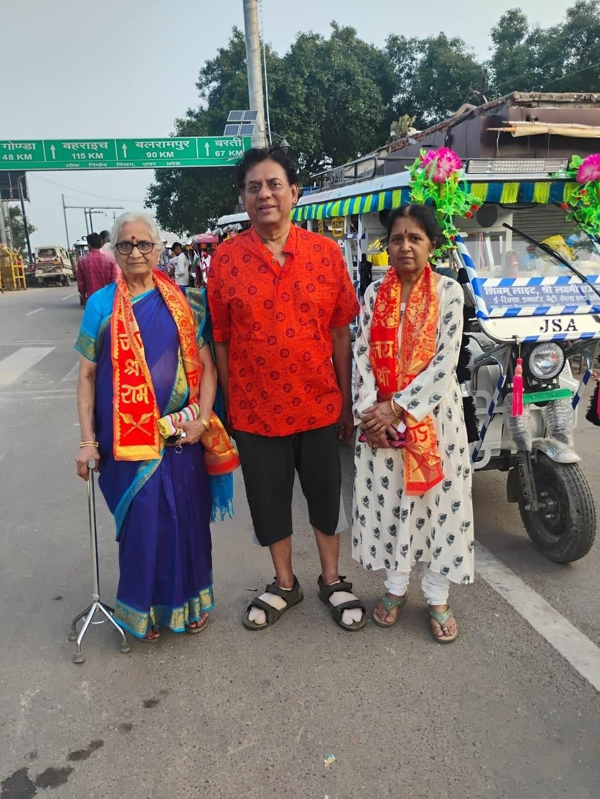
On the road · Kashi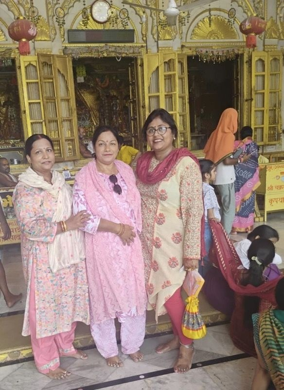
Braj darshan · Vrindavan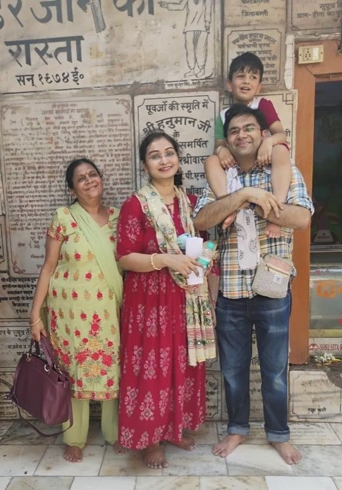
Family yatra · KashiQuick answers
Begin your yatra
Share your dates and the cities on your heart. A yatra guide will craft a personal itinerary — no obligation, no rush.
Plan your divine pilgrimage to Varanasi (Kashi Dham) with expert guidance on Kashi Vishwanath VIP Sugam Darshan, Mangla Aarti online booking, private Ganga Aarti boat rentals, local cab transfers, corridor hotel stays, and verified day-wise yatra itineraries.
Everything you need for a divine, queue-free pilgrimage to Varanasi: verified temple entry protocols, Sugam Darshan VIP slots (₹300), private Ganga Aarti boat bookings (₹1,500–₹3,500), airport transfers, sacred ghat parikrama, Sarnath Buddhist circuit, satvik culinary hotspots, and emergency assistance.
Ideal for travelers with limited time arriving early morning at Varanasi Junction (BSB) or Lal Bahadur Shastri International Airport (VNS).
The most popular short weekend package for working professionals and families.
The ultimate immersive Kashi experience including Mangla Aarti, VIP Corridor tour, Ganga Cruise, and Ramnagar Fort.
A complete spiritual circuit connecting Lord Shiva’s Kashi, Triveni Sangam Prayagraj, and Lord Ram’s Ayodhya Dham.
Visiting Shri Kashi Vishwanath Jyotirlinga without standing in long queues (which can stretch up to 3-5 hours on Mondays and festival days) requires understanding the official VIP ticket system managed by the Shri Kashi Vishwanath Temple Trust (SKVT).
| Darshan / Aarti Category | Official Fee (Per Person) | Timing / Slots | Key Highlights & Rules |
|---|---|---|---|
| Sugam Darshan (VIP Entry Pass) | ₹300 (Normal Days) / ₹500 (Sawan Mondays) | 06:00 AM to 06:00 PM (Hourly Slots) | Dedicated fast-track VIP queue bypasses general crowd. Takes 15-25 minutes total. Includes Angavastram/Prasad. |
| Mangla Aarti Pass | ₹500 - ₹1,000 (Sawan Surge: ₹1,500 - ₹2,000) | 03:00 AM – 04:00 AM (Entry 02:30 AM) | First divine awakening ceremony of Lord Shiva. Sit inside Garbhagriha. Extremely limited seats (Must book 30 days prior). |
| Bhog / Midday Aarti | ₹300 | 11:15 AM – 12:20 PM | Sacred food offering ceremony. High spiritual energy inside inner sanctum. |
| Saptarishi Aarti Pass | ₹300 | 07:00 PM – 08:15 PM | Performed simultaneously by 7 chief archakas representing the Seven Sages. Deeply mesmerizing Vedic chants. |
| Shringara Aarti Pass | ₹300 | 09:00 PM – 10:15 PM | Night decoration ceremony where Jyotirlinga is adorned with grand floral crowns and sandalwood paste. |
shrikashivishwanath.org or let Kashi Dharshan manage ticket issuance directly with your package booking.Viewing the world-famous evening Ganga Aarti at Dashashwamedh Ghat from a private boat anchored on the waters of the Ganges is the highlight of any Varanasi visit. Below are the 4 main boat options available through Kashi Dharshan:
Capacity: 2 to 8 Persons
Pricing: ₹1,500 – ₹3,500 per ride
Duration: 2 Hours (5:00 PM to 7:00 PM)
Best For: Couples, small families, and photography enthusiasts wanting an intimate, quiet experience close to the ghat stairs.
Capacity: 8 to 20 Persons
Pricing: ₹3,500 – ₹8,000 per boat
Duration: 2.5 Hours
Best For: Medium groups and family reunions. Moves comfortably from Assi Ghat to Manikarnika Ghat before anchoring for evening Aarti.
Capacity: 30 to 100 Persons
Pricing: ₹12,000 – ₹28,000 per evening
Duration: 3 Hours
Best For: Corporate yatras, large wedding groups, and NRI delegations. Features upper deck viewing platform, comfortable sofa seating, and on-board tea/snacks service.
Capacity: Ticket basis (Per seat)
Pricing: ₹900 – ₹1,500 per seat
Timing: 05:30 PM Sunset Ride
Best For: Fully air-conditioned luxury cruising with live classical Shehnai music performance and guided historical audio narration.
Note: During peak festivals like Dev Deepawali, Maha Shivratri, and Kartik Purnima, boat rentals experience heavy demand surge. Advance reservation at least 15-30 days prior is strictly recommended.
Planning transit in Varanasi requires accurate knowledge of distances and traffic restriction zones (such as Godowlia Crossing, which becomes a pedestrian-only zone for four-wheelers between 09:00 AM and 09:00 PM).
| Origin Point | Destination Point | Distance (km) | Approx. Travel Time | Recommended Cab Type & Fare |
|---|---|---|---|---|
| Lal Bahadur Shastri Airport (VNS) | Godowlia / Kashi Vishwanath Gate | 26 km | 45 – 60 Mins (via Ring Road) | Sedan: ₹950 – ₹1,200 | SUV: ₹1,600 |
| Varanasi Junction (BSB / Cantt) | Dashashwamedh Ghat | 4.5 km | 20 – 30 Mins | Auto: ₹150 | Sedan Cab: ₹450 |
| Banaras Station (BSBS / Manduadih) | Assi Ghat | 6.0 km | 20 Mins | Sedan Cab: ₹500 | SUV: ₹800 |
| Deendayal Upadhyaya Station (DDU) | Kashi Vishwanath Corridor | 18 km | 40 – 50 Mins | Sedan Cab: ₹900 | SUV: ₹1,400 |
| Godowlia / City Center | Sarnath Stupa & Museum | 11 km | 30 Mins | Half-day Sightseeing Cab: ₹1,600 |
| Varanasi (Kashi) | Prayagraj Triveni Sangam | 125 km | 2.5 Hours (via NH-19) | Same-Day Roundtrip Cab: ₹3,800 |
| Varanasi (Kashi) | Ayodhya Ram Mandir Dham | 205 km | 4.0 Hours (via Purvanchal Exp) | Sedan: ₹4,500 | SUV Ertiga: ₹6,500 |
Choosing the right location for stay in Kashi dictates how smooth your pilgrimage will be. Below is a breakdown of top accommodation zones categorized by traveler preference:
Best For: Senior citizens, early morning Mangla Aarti attendees, and devotees who prefer walking directly to temple gates without needing autos.
Top Stays: BrijRama Palace (Heritage Luxury), Hotel Temple on Ganges, Hotel Alka, staying inside Chowk/Bansphatak guest houses.
Pros: 2-minute walk to Ganga Aarti and Temple Gate 2.
Cons: Vehicles cannot reach hotel entrance directly; luggage must be carried via rickshaw/porters for 200 meters.
Best For: Peaceful stays, Subah-e-Banaras morning yoga, boutique cafe culture, and family groups.
Top Stays: Palace on Ganges, Treebo Trend, Hotel Ganges View, Zostel Varanasi.
Pros: Open riverfront views, easy vehicle access up to hotel gates, peaceful evening vibe.
Distance: 3.5 km from Kashi Vishwanath (15 mins by e-rickshaw).
Best For: Luxury travelers, corporate delegations, and NRI families requiring 5-star amenities, swimming pools, and spacious parking.
Top Stays: Taj Nadesar Palace, Radisson Blu Varanasi, Welcomhotel by ITC Hotels, Ramada Plaza.
Pros: 5-star luxury, wide roads, quiet environment.
Distance: 6 km from Kashi Vishwanath Temple (25 mins by cab).
Best For: Budget pilgrims, large yatra groups, and traditional devotees seeking pure vegetarian dining and satvik stay.
Top Dharamshalas: Mumukshu Bhawan (Assi), Annapurna Kshetra Trust Guest House (Godowlia), Bharat Sevashram Sangh (Sigra), Marwari Seva Sangh.
Rates: ₹500 – ₹1,500 per room night.
Kashi (Varanasi) is recognised as the oldest living city in human civilization, existing for over 5,000 years continuously on the crescent-shaped western bank of the sacred River Ganga. In Skanda Purana's Kashi Khanda, Shiva declares Kashi as His permanent abode — Anandavana (the Forest of Bliss) and Avimuktha Kshetra (the sacred territory that Shiva never forsakes, even during Pralaya or global cosmic dissolution).
Performing holy dips and offering Pinda Daan ancestral rituals across these 5 key ghats completes the sacred Pancha Tirtha Yatra:
Inaugurated by Prime Minister Narendra Modi in December 2021, the grand Shri Kashi Vishwanath Dham Corridor Project expanded the temple premises from a cramped 3,000 square feet to over 500,000 square feet (50,000 sq meters), directly connecting the holy waters of the River Ganga at Lalita Ghat to the Golden Temple sanctum.
No visit to Kashi is complete without relishing authentic Banarasi satvik street food delicacies and exploring centuries-old artisanal craft markets in Vishwanath Gali and Thatheri Gali.
Beyond the main Kashi Vishwanath temple, classical Hindu scriptures describe the sacred 55-mile Panchkroshi Parikrama — a 5-day walking pilgrimage encircling 108 holy shrines around the outer perimeter of Kashi Dham.
According to Kashi Khanda, 8 forms of Lord Bhairava protect the 8 cardinal directions of Kashi. Seeking their blessings removes all fears and obstacles:
Located just 10 km northeast of Kashi Vishwanath Temple, Sarnath (Isipatana) is one of the four most sacred Buddhist pilgrimage destinations in the world. It is here in the Deer Park (Rishipatana) that Lord Buddha preached his first sermon after attaining enlightenment at Bodhgaya, turning the Wheel of Law (Dharmachakra Pravartana).
The holy month of Shravan (Sawan) and the auspicious festival of Maha Shivratri witness the highest influx of Shiva devotees (Kanwariyas) visiting Kashi Vishwanath Dham. Over 5 million pilgrims perform Jalabhishekam with holy Ganga water brought on foot from Sultanganj or Gaumukh.
In Hindu theology, performing ancestral rites (Shraddh Karma) in Kashi frees ancestors' souls from earthly bondage, granting them eternal peace and salvation. Kashi Dharshan provides certified Teerth Purohit (local Vedic Pandits) for performing sacred rituals at designated ghats.
Preparing for your pilgrimage to Varanasi requires understanding the seasonal climate variations and carrying suitable attire for sacred temple visits and boat rides on the River Ganga.
| Season & Months | Temperature Range | Weather Characteristics | Pilgrimage Suitability |
|---|---|---|---|
| Winter (Oct – Mar) | 8°C to 25°C | Pleasant, crisp mornings with early fog over the Ganges. Cool breeze during evening Aarti. | Peak Season (10/10): Best time for Dev Deepawali, ghat walking, and boat rides. Heavy bookings required. |
| Summer (Apr – Jun) | 28°C to 44°C | Hot afternoons with strong Loo winds. Warm evenings. | Off-Peak Season (7/10): Budget stays available. Early morning 05:00 AM darshan recommended. |
| Monsoon (Jul – Sep) | 24°C to 34°C | Heavy rain showers. Water level in River Ganga rises, partially submerging lower ghat stairs. | Sawan Season (9/10): Sacred Sawan Yatra month. Boat rides operate with restricted motor limits during flood alert. |
To ensure a safe, hassle-free, and spiritually enriching experience for pilgrims from all corners of India and overseas, Varanasi Administration operates dedicated Tourist Assistance Booths across major transit hubs.
When you book your Varanasi yatra with Kashi Dharshan, we guarantee 100% transparent pricing with no hidden charges, verified luxury/deluxe hotel stays with 24-hour hot water and satvik dining, polite and knowledgeable local pandit guides, private sanitized AC cabs with experienced drivers, and dedicated on-ground yatra managers to assist senior citizens at every step of your divine trip.
A complete 3-Day / 2-Night Kashi Dharshan tour package starts at ₹7,900 per person for budget categories and ₹12,500 - ₹18,500 per person for 3-star/4-star deluxe stays with private AC sedan cab, VIP Kashi Vishwanath darshan assistance, private Ganga Aarti boat ride, and Sarnath sightseeing included.
Shri Kashi Vishwanath Dham is 100% barrier-free and senior citizen friendly. Battery-operated electric golf carts (E-carts) run continuously from Godowlia Gate to Ganga Ghat Gate. Wheelchairs with dedicated attendants are available free of cost at Gate 2 and Gate 4. Kashi Dharshan tour managers accompany senior citizen yatris directly through the Sugam Darshan fast queue.
No, electronic devices including mobile phones, digital cameras, smartwatches, metal keys, and leather belts are strictly banned inside the inner temple complex. Devotees can safely deposit footwear and valuables at the digital locker counters operating at Gate 2 (Saraswati Gate) and Gate 4 (Ganga Riverfront Corridor Gate).
General Darshan involves joining the public queue, which can take anywhere from 1.5 to 4 hours depending on crowd levels. Sugam Darshan is a ticketed priority pass (₹300 fee) that grants direct entry via an exclusive air-conditioned VIP hallway, allowing devotees to complete darshan in under 20 minutes.
The ideal time to visit Kashi is during the autumn and winter months from October to March when temperatures range between 12°C and 25°C. Visiting during November allows you to experience the world-famous Dev Deepawali festival, where all 84 ghats are illuminated with over 1 million earthen oil lamps (diyas).
Kashi Dharshan offers customized 5-Day and 6-Day Sacred Triangle tour packages covering Kashi Vishwanath, Triveni Sangam Prayagraj, and Shri Ram Janmabhoomi Ayodhya with dedicated private AC cabs, verified hotel stays, and priority VIP passes. Contact our local helpline at +91 70119 60307 for instant custom itineraries.